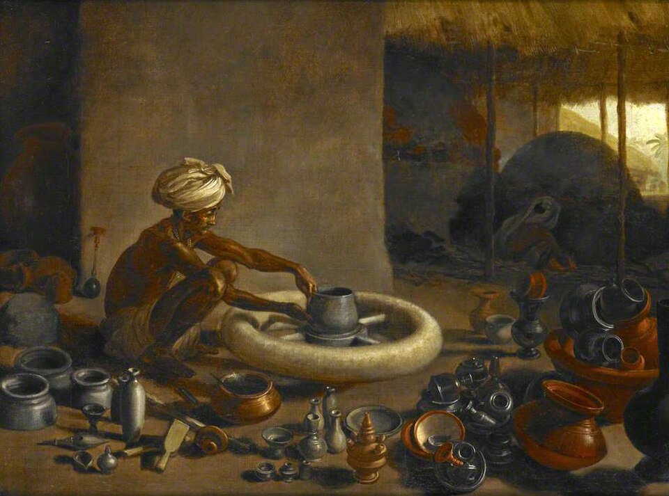
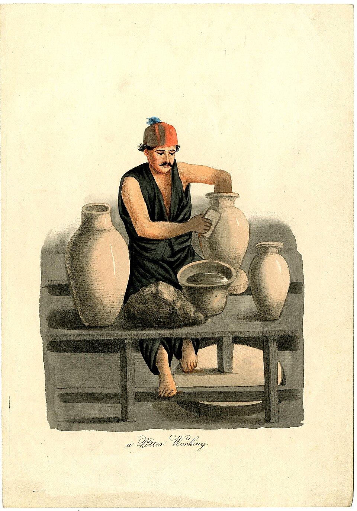
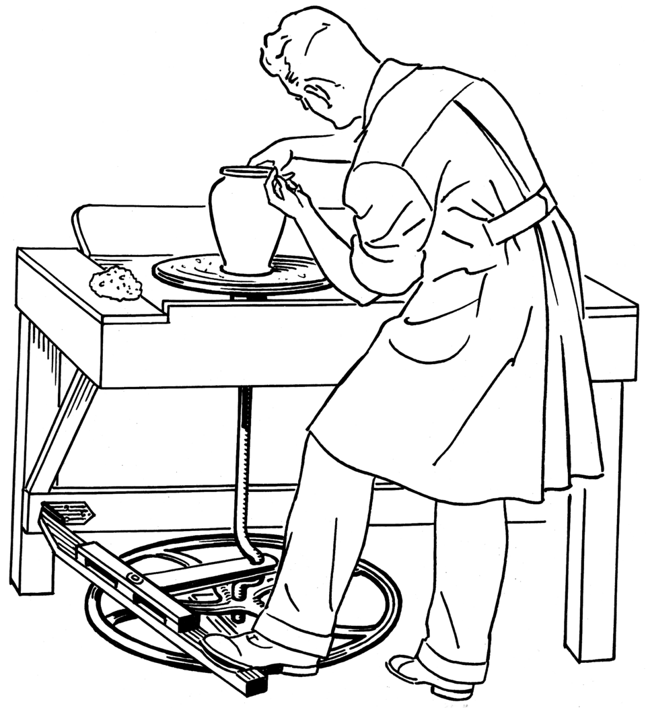
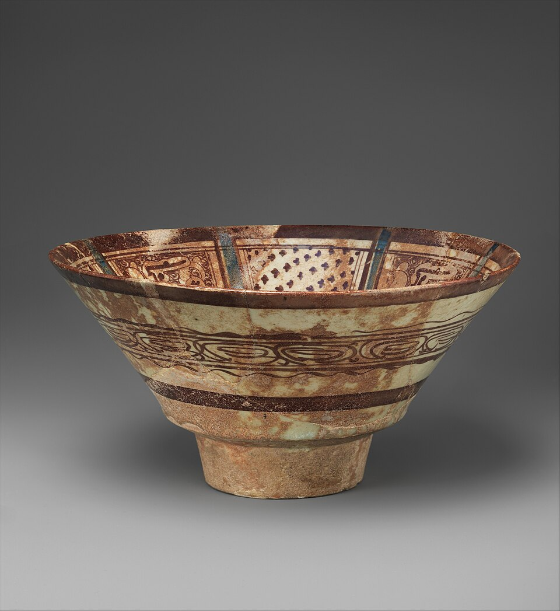
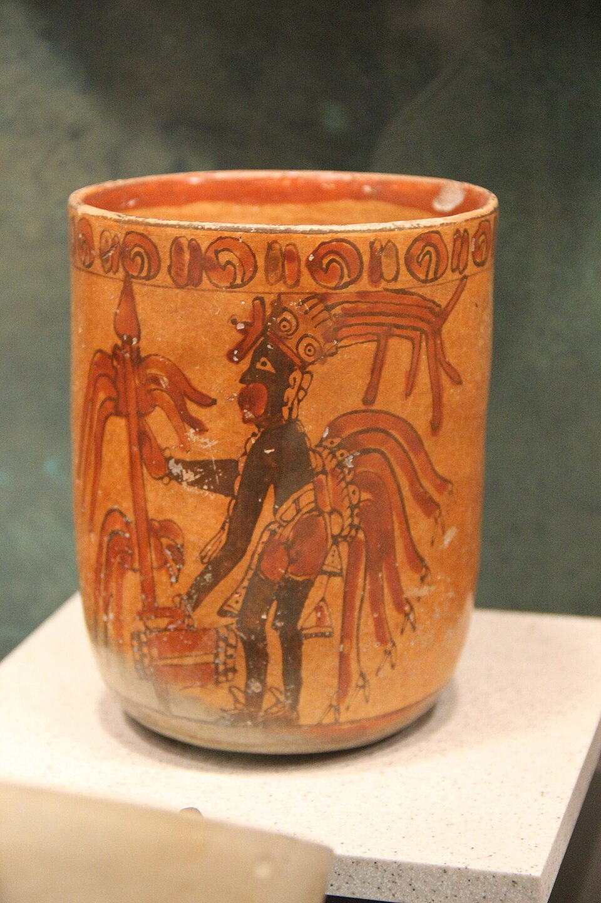
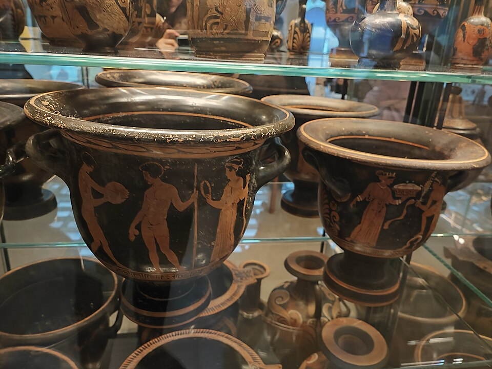
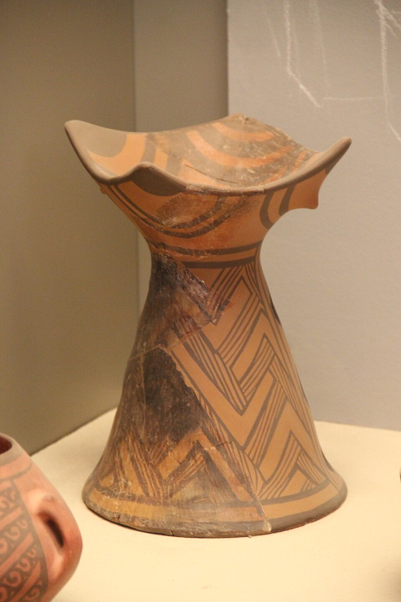

Hands in the clay — poems in three dimensions

Alongside the songs and the poems, there is clay. Pottery found me later in life — a friend needed a hand in his studio, and I never quite left. There is something honest about a lump of mud: it won’t pretend. It asks you to be patient, to listen, to give — and then to let go, and let the fire have the last word.
This page is a work in progress, like everything thrown on a wheel. Here I’ll gather the pieces I’ve made, the ones that taught me something, and the reasons a singer keeps coming back to the mud.
More pieces and studio stories are on the way — this is the beginning of the collection.
From the Kiln
A few thoughts I’ve written down while the hands were busy — self-made lines, straight from the studio.
Clay is the most patient listener I know. It holds everything you give it and forgives everything you take back.
Jon D. Elton
A pot is a poem you can hold — every curve a line, every glaze a thought, and the kiln the long silence where it learns what it means.
Jon D. Elton
Centering the clay is centering yourself. You cannot throw a good pot from a restless hand.
Jon D. Elton
I have sung for rooms full of people, but the wheel teaches the same lesson quieter: if the middle holds, the rest will follow.
Jon D. Elton
Every piece comes out of the kiln either a little more or a little less than you hoped — and both are gifts.
Jon D. Elton
The Process
From a bag of mud to a finished pot — five steps, none of them skippable.

The first and hardest step. The clay must sit true at the heart of the wheel before anything can grow from it. My grandfather told me the same about the poems: start true, or start over.

Lift the walls, thin them, trust the rotation. Most of what a pot will become is decided in the first ten minutes at the wheel.

The surface finds its voice — the blues of Lake Whatcom in the morning, gold like the leaves in fall. This is where the pot gets its clothes.

The kiln is the truest friend: it keeps every promise the hands made. A long, hot wait — and only then do you learn what you actually made.
From the Studio
A first glimpse of the shelves — a few of the works that keep this potter humble.


Part of every gift goes toward helping underprivileged children in Africa. If this site has moved you, consider a small gift.
Make a Donation